Life is like a journey
Storms may come our way
sometimes with shafts of light and a rainbow
Photo: Majestic Rocky Mountains, Banff area, Canada, 17 Dec 2005 . . Family Collection
Family's Self Drive UK Trip, early 1980s
London
London Bridge scene, early 1980s
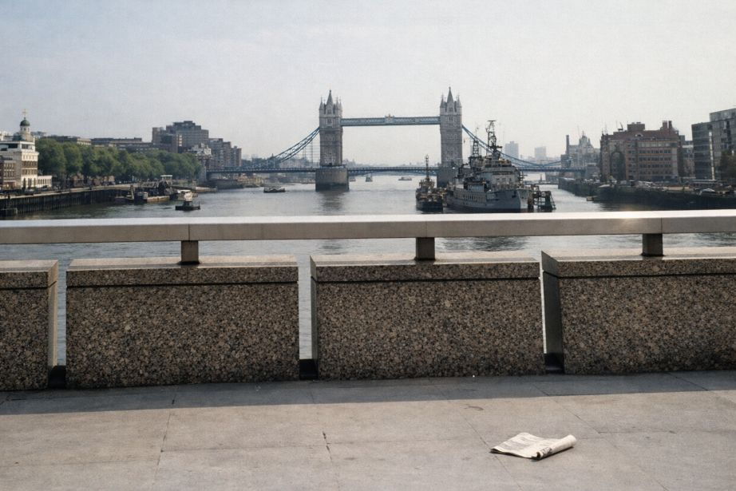
The scene from the River Thames, early 1980s
.
10 downing Street, early 1980s.
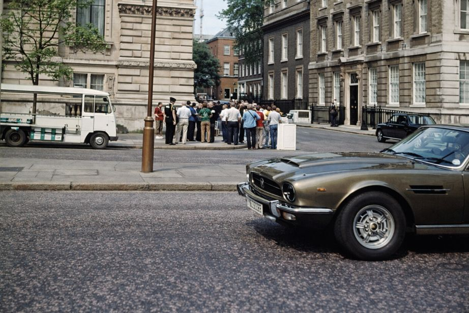
Crowd waiting expectantly for any appearance of the British PM
.
Trafalgar Square, early 1980s.
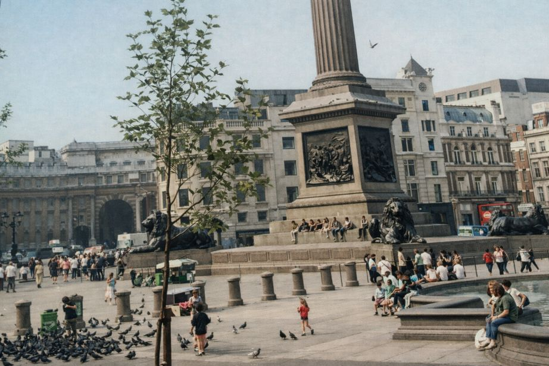
Memorial to Lord Nelson's victory over a superior Napoleanic fleet, off Cape Trafalgar
.
.
Stonehenge and the West
From Central London to M4
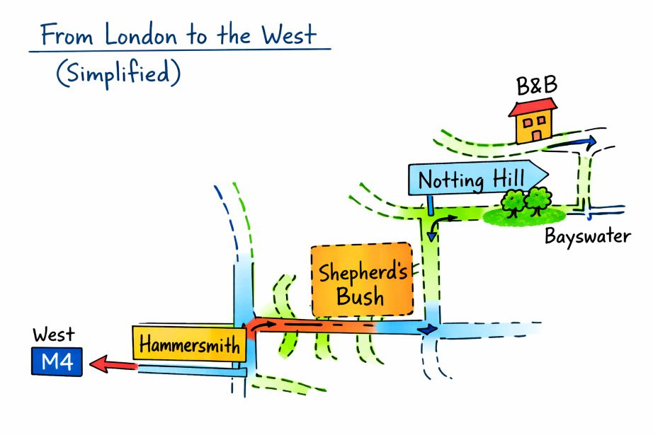
London is a large city. This simplified sketch only captures the main landmarks.
Detailed planning had to be done before the drive was undertaken
Route: B&B -> Bayswater -> Notting Hill -> Shepard's Bush -> Hammersmith
.
From M4 to Stonehenge
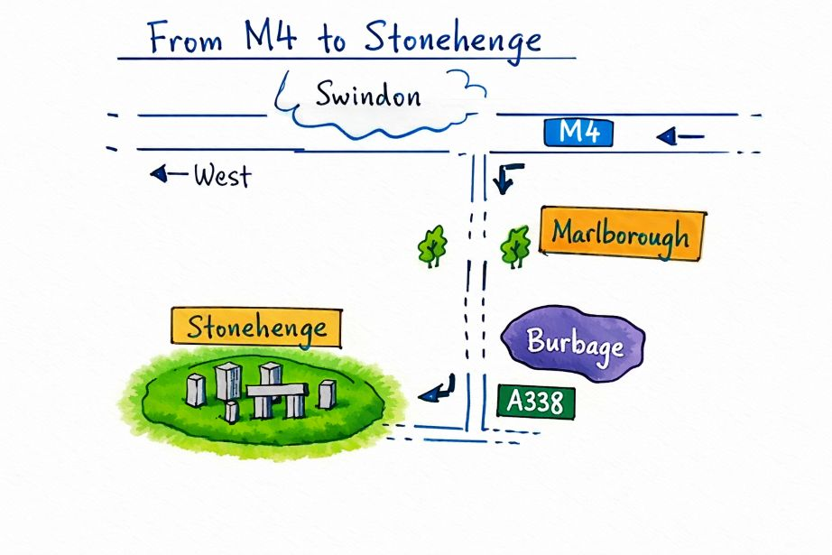
Turn off near Swindon to Marlborough
.
Stonehenge
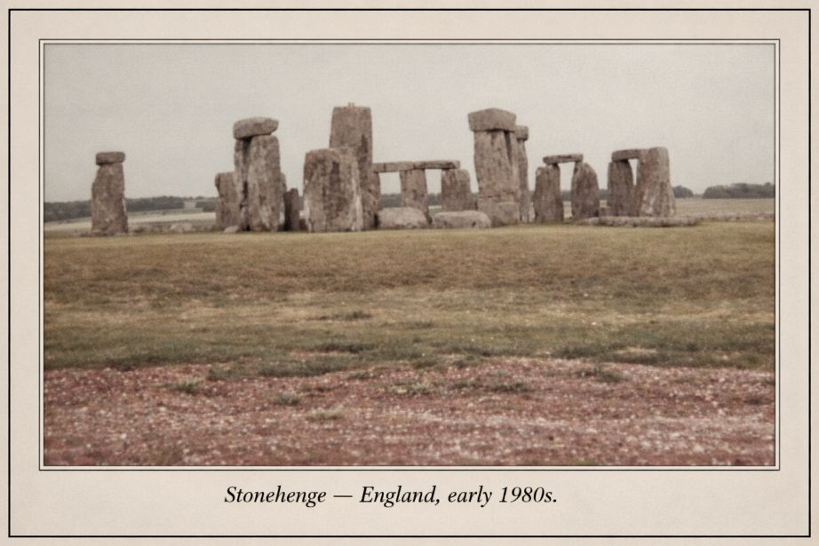
The drive to Stonehenge was by contrast quite easy.
Visitors were not allowed near the site
This photo was taken some distance off
Note: visitors should be prepared for strong wind (wind chill)
Stonehenge is interesting because the huge multi-ton stones are not natively found in this area
It is believed that the stones came from Wales, about 150 odd km away
It is thought that the site was built over 1000 years ago
How did the ancients transport the stones ? How did they lift the stones ? What was the purpose of this site ?
Nobody knows, but there are plenty of "aliens from outer space" theories
After Stonehenge, it was back to M4 and onward to Cardiff, Wales, via the Severn Bridge
.
Bridge over the River Severn, enroute to Cardiff
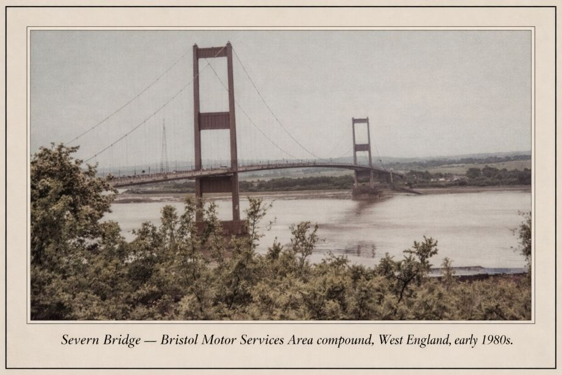
This pic was taken from the compound of the Bristol Motorway Services Complex.
The Severn Bridge was considered an Engineering feat at the time
- Engineers had to contend with strong tidal currents
- The river bed was soft mud.
- Engineers used innovative techniques to overcome these obstacles
- So the bridge is supported both by caissons, and a (barely visible) suspension
From the Motorway Services Complex, we set off to Cardiff via M4 over the Severn Bridge
.
Ferriers Guest House, Cardiff, Wales
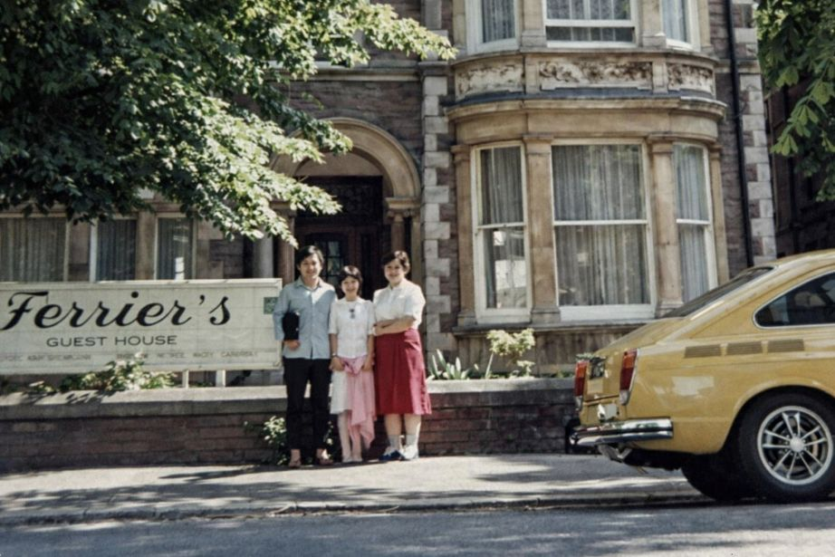
Our hotel in Cardiff. Chosen for easy access from M4, and reasonable price
It also had easy access to A470 and the Dan-Yr-Ogof Caves via Sennybridge
.
Dan-Yr-Ogof Caves, Brecon National Park, Wales
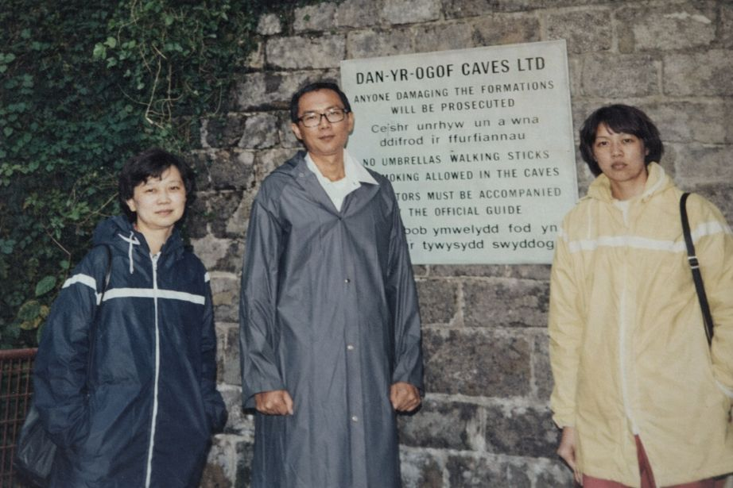
The Dan-Yr-Ogof (pronounced "Danny Ogof") Caves is located in the Brecons area
Route: A470 -> Brecon Rd -> Sennybridge -> A4067 -> Danny Ogof car park
Back then, this was straightforward - little traffic
The height from car park to cave entrance is about that of Bukit Timah Hill (160 odd m)
However, the last 100 odd m to the cave was quite steep. It was a rainy day, thus the raincoats
.
From Cardiff to Stratford on Avon, and Sandbach, and Grasmere
From Cardiff to Stratford on Avon
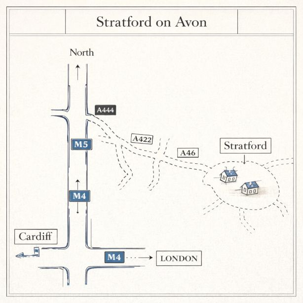
Route: Cardiff -> M4 -> M5 -> A444 -> ... -> Stratford
.
Shakespear's Birthplace
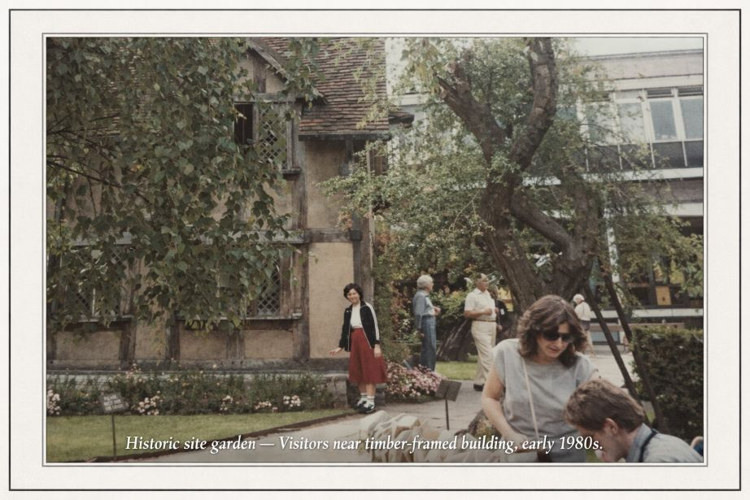
Family member in white and red in the centre of the pic, with building behind
.
Shakespear Centre
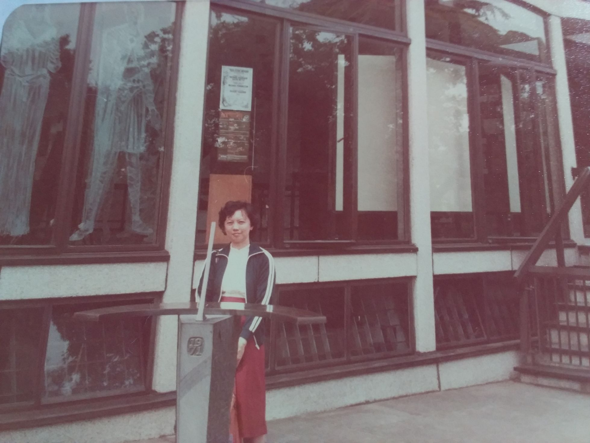
Family member behind the memorial marker
After this, we backtracked to M5, and headed North to Sandbach for lunch
.
Sandbach Motorway Services Complex
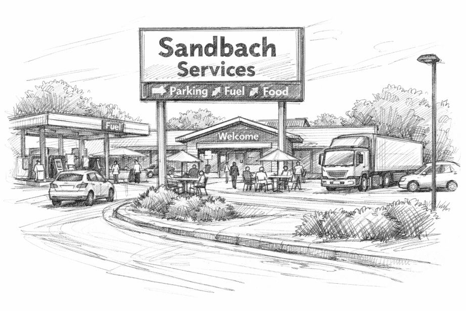
Sandbach is conveniently located between Liverpool, Manchester and Birmingham
We had a meal here
The cafe at Sandbach carried both Chinese cuisine and Fish & Chips
From Sandbach, we headed for our B&B in Grasmere, near Windermere, but better priced. Arrived Grasmere about 10:30 pm. In UK, the period between 7pm and 10 pm is usually light enough to move about
.
.
.
Search for Hadrian's Wall, North England
Search for Hadrian's Wall
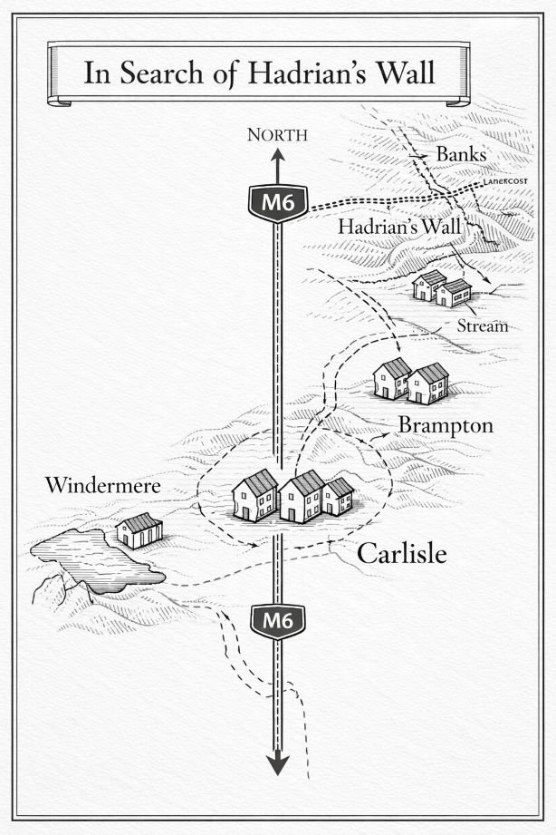
From Grasmere, we drove to Windermere for a short visit
From Windermere we headed to Lanercost road, which, according to maps, Hadrian's Wall was located
Route: Windermere -> Carlisle -> Brampton -> Lanercost
Lanercost was a quiet, rural area. No traffic.
Here we came across a young woman washing clothes at a stream
.
Artist impression of Woman washing clothes by a stream
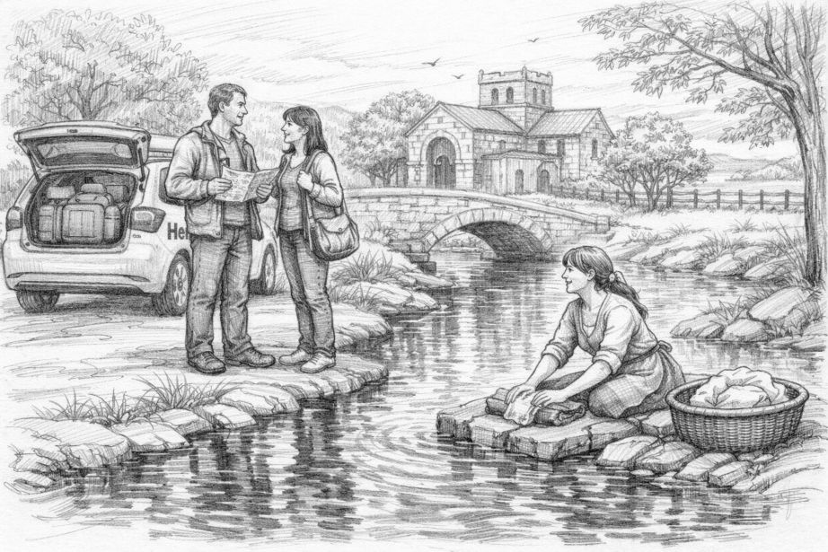
We stopped to ask for directions
The woman said she had not heard of Hadrian's Wall
She told us that we were the first Japanese she has seen in the area
She had not heard of Singapore either
Search aborted - time constraint. We turned around and headed for Pitlochry via Carlisle, A7 and Edinburgh
Note: years later (around 2018), it was found, using Google Map, that we should have gone further up Lanercost Rd, and turned at Banks Road
.
Onwards toPitlochry, Scotland, via Edinburgh
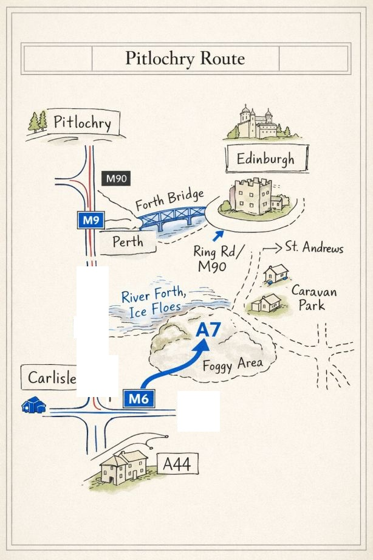
Route: Lanercost -> Carlisle -> M6 -> A7 (thick fog) -> Caravan Park (near St Andrew Golf Course)
The fog was like pea soup over a long stretch on the A7
Visibility was near 0. Telephone poles lining the road were invisible
Drove by aligning with the reflective metal studs lining the road centre
.
Caravan Park, outskirts of Edinburgh
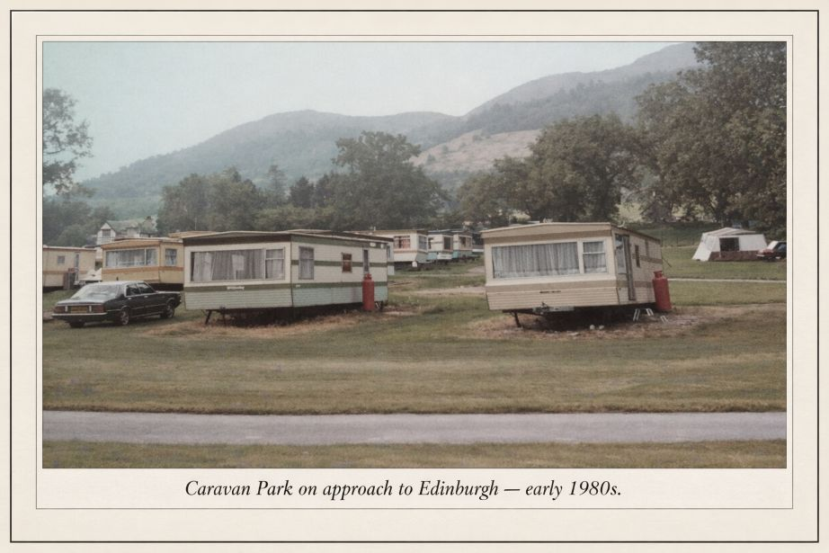
Shortly after passing the Caravan Park, we were on the Edinburgh Ring Road (M90)
This road enabled traffic to bypass the Edinburgh City's narrow, congested roads
When crossing the Forth Bridge, we saw ice floes on the River Forth
It was June, near summer. Not very warm out there.
After crossing the Forth, the drive to Pitlochry via Perth was straightforward
.
.
From Pitlochry To Loch Ness and beyond
From Pitlochry to Loch Ness and beyond
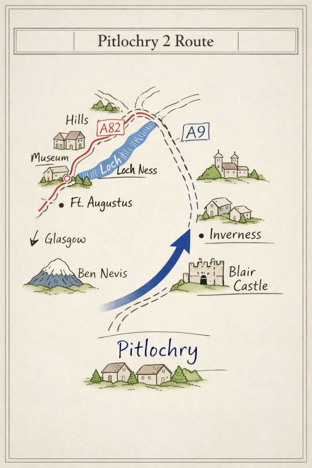
Route: Pitlochry ->A9 -> Blair Castle
After Blair Castle: A9 -> Inverness -> A82 -> Loch Ness
.
Blair Castle, on the A9 to Inverness

Family members with Blair Castle in the background
After this, we headed back to A9 toward Inverness
From Inverness, we got onto the A82 to Loch Ness
.
Loch Ness, first viewpoint
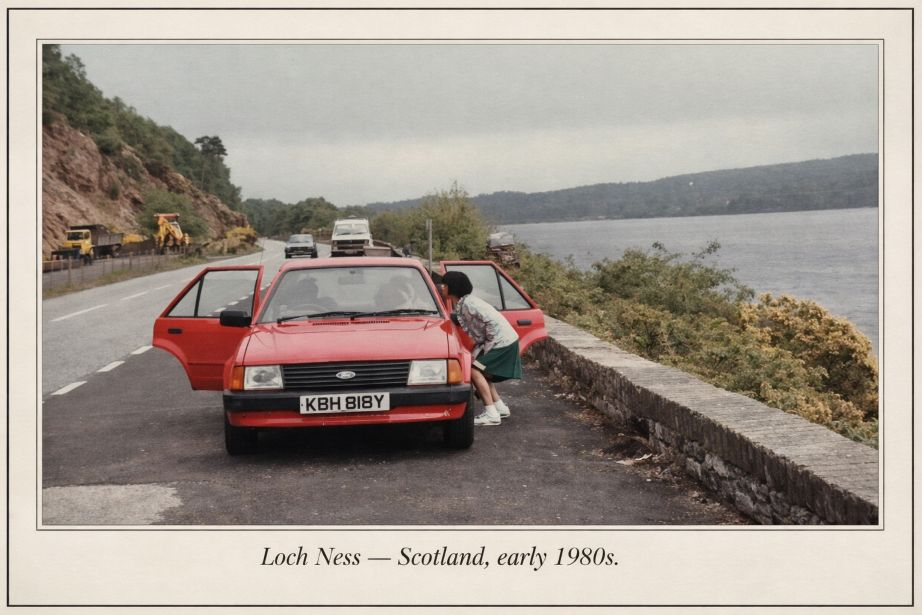
This is the first Viewpoint along the Loch
There are hills and a forest, partly visible, to the left of the pic
C is telling folks inside the warm car that it was not that cold outside.
The temperature was about 15 Celsius, considered good for the area.
Caveat: don't let the winds blow, at least, not too long, or too strong
.
Monster Museum, Drumnadrochit, off Loch Ness
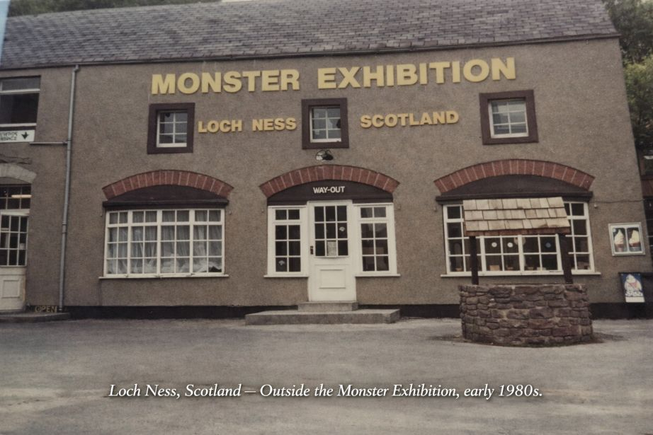
For those who failed to see the Monster, this is the place to go
You can buy scaled Monster replicas, and many other related souveniers from here
.
Urquhart Castle, A82, near Museum
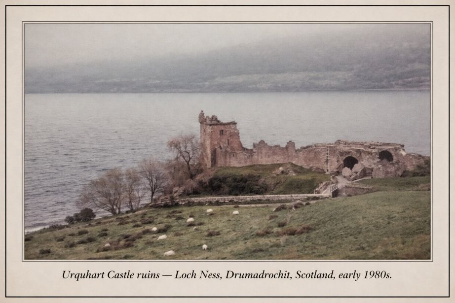
.
Loch Ness, near Fort Augustus
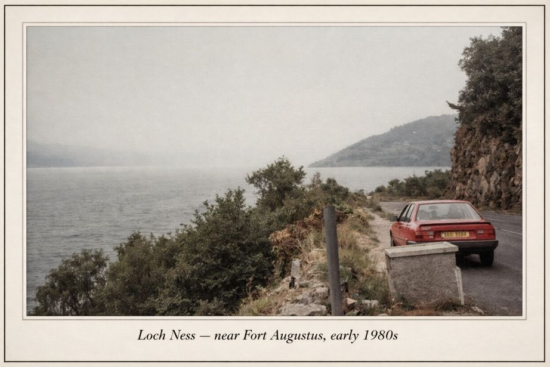
Second Viewpoint along Loch Ness, nearer to Ft Augustus
Here, the lake looked cold, deep, and fog covered
As we narrowed the distance to Ft Augustus, the lake became marshy
We continued beyond Augustus to Glasgow for a meal
.
Meal at Lockerbie Cafe
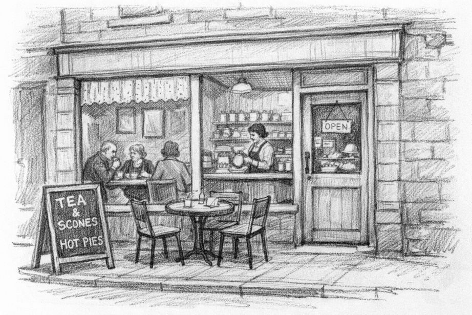
We could not find any suitable cafe on the outskirts of Glasgow
So we backtracked to a small town called Lockerbie, where we ate at a small, no frills cafe
The following day, we left Pitlochry and went to a B&B at Portinscale, Cumbria (Lake District)
From here, we departed for Haworth, Yorkshire, for the final leg of tour
.
.
Haworth, Yorkshire - the Final Leg
Big Dog - Haworth, Yorkshire
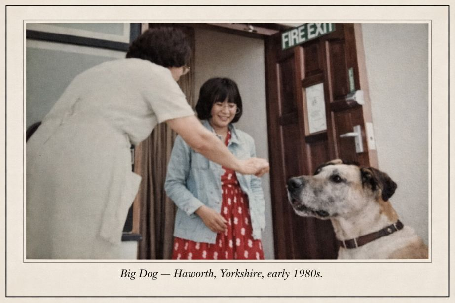
Haworth : Bronte Country (think Jane Austen)
Our B&B hosts had a giant dog. It was well-behaved, but looked nervous
It was probably not used to having so many strangers present
From here, we drove back to London, this time via M1
.
The Yorkshire Moor
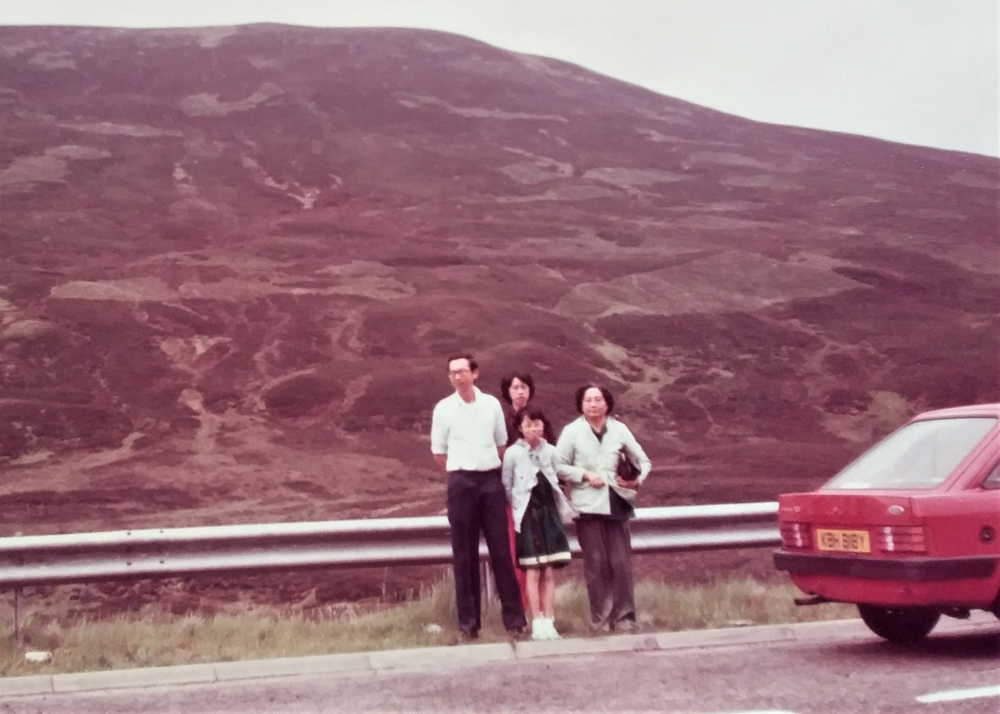
While on the way back to London, we encountered the rolling terrain of Yorkshire
This brought to mind Arthur Conan Doyle's "Sherlock Holmes and the Hound of the Baskervilles"
After this, back to London for the flight Home
.
Press the 3-bar menu at top right to go next page or back to top
.
.